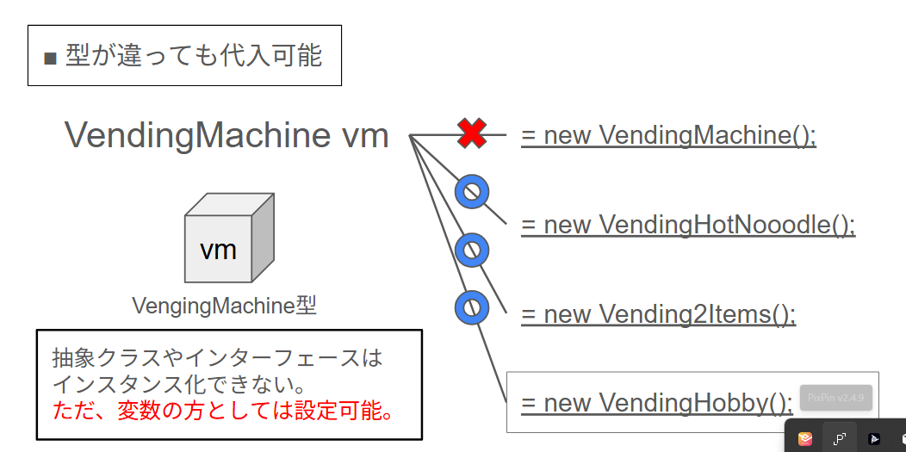

多態性（ポリモーフィズム） — 第14-1回：復習と前提知識・配列で自販機をまとめて扱う
多態性の話に入る前に、配列とfor 文（普通の for と拡張 for）を、身近な型でおさらいします。ここでは自作クラスは使わず、String や int だけを使うので、「配列ってこうだったな」「for でひとつずつ処理するんだったな」と思い出してから進めましょう。
配列は、同じ型の要素をまとめて入れておく箱です。例：String[] names = new String[3]; で「文字列が3つ入る箱」を用意し、names[0] = "りんご"; のように要素に代入します。names.length で要素数（ここでは 3）が取れます。
// String の配列の例 String[] names = new String[3]; names[0] = "りんご"; names[1] = "みかん"; names[2] = "ぶどう"; // names.length は 3
普通の for 文では、添え字 i を 0 から 配列.length - 1 まで増やし、names[i] で各要素にアクセスします。
// 普通の for：i で 0, 1, 2 と回す
for (int i = 0; i < names.length; i++) {
System.out.println(names[i]); // りんご → みかん → ぶどう
}
拡張 for 文（for-each）では、添え字を使わず「配列の要素を1つずつ変数に取り出して」処理します。for (String s : names) で、s に順に "りんご"、"みかん"、"ぶどう" が入ります。
// 拡張 for：要素を 1 つずつ s に取り出す
for (String s : names) {
System.out.println(s); // りんご → みかん → ぶどう
}
この「同じ型のものを配列にまとめて、for でひとつずつ扱う」が、このあと自販機の型でも同じように出てきます。まずは String でイメージを思い出しておきましょう。
多態性の説明と3人のやり取りで出てくる「自販機」は、次の4つのクラスをサンプルとして使います。どのクラスがどんな役割・内容かを先に押さえておきましょう。
| クラス名 | 種類 | 内容・役割 |
|---|---|---|
VendingMachine | 抽象クラス（スーパークラス） | 「自販機」の共通の型。中身は書かず、buy() を抽象メソッドとして「購入処理を必ず持つ」と約束するだけ。インスタンスは作らない。 |
VendingHotNoodle | サブクラス | 温かい麺用自販機。buy() では「購入」→「2分待つ」→「お湯を注ぐ」の流れを表示する。 |
Vending2Items | サブクラス | 2つの商品を扱う自販機。selected（0 か 1）で1つ目（コーラ）か2つ目（お茶）かを決め、buy() でどちらかを購入した表示をする。 |
VendingHobby | サブクラス | ガチャガチャ型自販機。buy() では乱数で 10％レア・70％ノーマル・20％外れ のいずれかを出した表示をする。 |
VendingMachine がスーパークラス（抽象クラス）で、3つのサブクラスが extends VendingMachine で継承しています。どれも「自販機」なので buy() を持ち、中身だけが違います。
| スーパークラス | サブクラス（継承） | 関係 |
|---|---|---|
VendingMachine（抽象クラス） abstract void buy(); | VendingHotNoodle | extends VendingMachine |
Vending2Items | extends VendingMachine | |
VendingHobby | extends VendingMachine |
図で言うと、VendingMachine が上にあり、その下に VendingHotNoodle・Vending2Items・VendingHobby が並んで「継承」の矢印でつながっているイメージです。コードの写しはこのあと【2】で出てきます。
上で紹介した4つのクラス（VendingMachine と3つのサブクラス）を前提に、カバ先生・ユウタ・ナナコの3人で、多態性の考え方を話し合います。第12回で抽象クラス、第13回でインタフェースを学んだ「型としての決まり」を、変数や配列の型として使い、同じメッセージで異なる動きをさせるのが「多態性」です。
カバ先生：「みんな、自動販売機にはヌードル用自販機、2品扱える自販機、ガチャガチャのマシンみたいに、いろいろあるよね。でもどれも『自販機』だから、購入するという仕事は絶対にできる。つまり、自販機から派生したクラスは、みんな buy() という処理を持っている。」
カバ先生：「みんな buy() という処理を持っている。なぜかわかるかな？」
ユウタ：「ヌードル用自販機はお湯を注いだり、2品扱える自販機はコーラかお茶を出したり、ガチャガチャのマシンはランダムで出たり、中身の手続きはバラバラだけど、どれも『購入』という仕事はする、ということですね。」
ナナコ：「じゃあ、使う側の気持ちで言うと……。要するに、自動販売機が入る変数に、ヌードル用自販機が入っていても、2品扱える自販機が入っていても、ガチャガチャのマシンが入っていても、『どれだか具体的な手続きはわからなくても、購入の処理はさせることができる』ってことですよね。だって、どれも自販機なんだから、買うことはできるでしょ？ って。」
カバ先生：「その通り。プログラムで言うと、変数の型を『自販機（VendingMachine）型』にしておく。そうすれば、その変数にはヌードル用自販機でも2品扱える自販機でもガチャガチャのマシンでも、どれを入れてもいい。で、使う側は『buy() してね』と一度呼ぶだけで、中身がどれであっても、その機種の購入処理が動く。これが多態性（ポリモーフィズム）の考え方だよ。」
ユウタ：「配列にしても同じですね。『自販機型の配列』に、3種類の自販機を入れて、for で buy() を呼べば、りんご・みかん・ぶどうを表示するみたいに、順番にそれぞれの購入処理が動く。使う側は『どれが入っているか』をいちいち気にしなくていい。」

この「自販機が入る変数（や配列）に、どれが入っていても、buy() で購入処理ができる」という考え方を、このあとコードで確認していきます。
buy() を呼ぶと、どの機種でも問題なくその機種の動きになることを確認できる。多態性の「流れ」と「つくり」を掴むため、自動販売機クラス（VendingMachine）をスーパークラスにした、きわめてシンプルな3つのクラスを用意しました。コメントを多めに入れてあるので、読みながら「どんな動きをするか」「どう継承しているか」を追ってみてください。
以下の4クラス（VendingMachine・VendingHotNoodle・Vending2Items・VendingHobby）は、Eclipse やメモ帳へ貼り付けて利用できます。メインクラスでのインスタンス化は各自で作成してください。
「自販機」の共通の型として、buy() を抽象メソッドで約束しておきます。サブクラスがそれぞれの「買い方」を実装します。
// 自動販売機のスーパークラス（抽象クラス）
// サブクラスは必ず buy() を実装する
public abstract class VendingMachine {
// 購入処理はサブクラスごとに違うので、ここでは「やること」だけ約束する
public abstract void buy();
}
buy() では「購入」→「2分待つ」→「お湯を注ぐ」の流れを表現します。
// 温かい麺用自販機（VendingMachine のサブクラス）
// buy では「購入 → 2分待つ → お湯を注ぐ」の流れを行う
public class VendingHotNoodle extends VendingMachine {
@Override
public void buy() {
// 1. 購入
System.out.println("温かい麺を購入しました。");
// 2. 2分待つ（説明用：実際には待機メッセージのみ。本格的に待つ場合は Thread.sleep(120000) など）
System.out.println("2分待っています...");
// 3. お湯を注ぐ
System.out.println("お湯を注ぎました。どうぞ。");
}
}
2種類の商品のうち、selected（0 か 1）でどちらを買うか判断します。
// 2つの商品を購入できる自販機（VendingMachine のサブクラス）
// selected が 0 なら1つ目、1 なら2つ目を出す
public class Vending2Items extends VendingMachine {
// 1つ目の商品名
private String item1 = "コーラ";
// 2つ目の商品名
private String item2 = "お茶";
// どちらを買うか（0 → item1、1 → item2）
private int selected;
// コンストラクタ：どちらを選ぶかを引数で受け取る
public Vending2Items(int selected) {
this.selected = selected;
}
@Override
public void buy() {
// selected の値で、出し分ける
if (selected == 0) {
System.out.println(item1 + "を購入しました。");
} else {
System.out.println(item2 + "を購入しました。");
}
}
}
購入時はランダムで3種類のどれかが出ます。Math.random() は 0.0 以上 1.0 未満の double を返すので、その値で 10％・70％・20％ に振り分けます。
// ガチャガチャ型自販機（VendingMachine のサブクラス）
// 購入時は Math.random() で 10% レア / 70% ノーマル / 20% 外れ のどれかが出る
public class VendingHobby extends VendingMachine {
@Override
public void buy() {
// 0.0 以上 1.0 未満の乱数（double 型）。この値で割合を振り分ける
double r = Math.random();
// 10%：0.0 以上 0.1 未満 → レアフィギュア
if (r < 0.10) {
System.out.println("レアフィギュアが出ました！");
return;
}
// 70%：0.1 以上 0.8 未満 → ノーマルフィギュア
if (r < 0.80) {
System.out.println("ノーマルフィギュアが出ました。");
return;
}
// 20%：それ以外（0.8 以上 1.0 未満）→ 外れ
System.out.println("外れフィギュアが出ました。");
}
}
スーパークラス型（VendingMachine）の配列を用意し、その中にヌードル用自販機・2品扱える自販機・ガチャガチャのマシンを入れます。for 文で配列を回し、それぞれ buy() を呼ぶと、どの機種であっても問題なく、その機種の buy() が実行されます。メインでは各自でインスタンス化し、次のような形で配列と for を使って動作を確認してください。
// 例：自販機型の配列に、3種類の自販機を入れる（アップキャスト）。メインは各自で作成
VendingMachine[] machines = new VendingMachine[3];
machines[0] = new VendingHotNoodle();
machines[1] = new Vending2Items(0); // 0 → 1つ目（コーラ）
machines[2] = new VendingHobby();
// どの自販機であっても、同じように buy() を呼べる
for (int i = 0; i < machines.length; i++) {
machines[i].buy();
}
このように、「自販機型の配列」でまとめて扱い、1本の for で各機種の buy() が正しく動くことを確認できれば、第14-1回のゴールです。第14-2回（アップキャスト・メソッドの引数と戻り値）は Lesson14-2 フォルダのテキストを参照してください。
buy() を呼ぶと、どの機種でもその機種の動きになる。